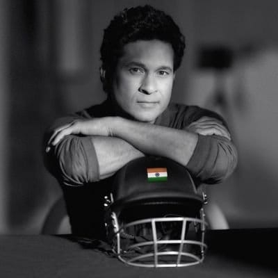

The God Of Cricket
"People throw stones at you and you convert them into milestones".
Sachin Tendulkar is an iconic figure in the world of cricket. Born on April 24, 1973, in Mumbai, India, Tendulkar is widely regarded as one of the greatest batsmen in the history of the sport. He made his international debut at the young age of 16 and went on to have an illustrious career that spanned 24 years. Tendulkar holds numerous records, including being the highest run-scorer in international cricket, with 34,357 runs across all formats. He displayed unparalleled technique, skill, and determination, earning him the nickname "Master Blaster." Tendulkar's impact extends beyond the cricket field, as he is seen as a role model and an inspiration to millions of aspiring cricketers around the world. His humility, passion, and love for the game have earned him the adoration of fans worldwide, making him a true legend of the sport.